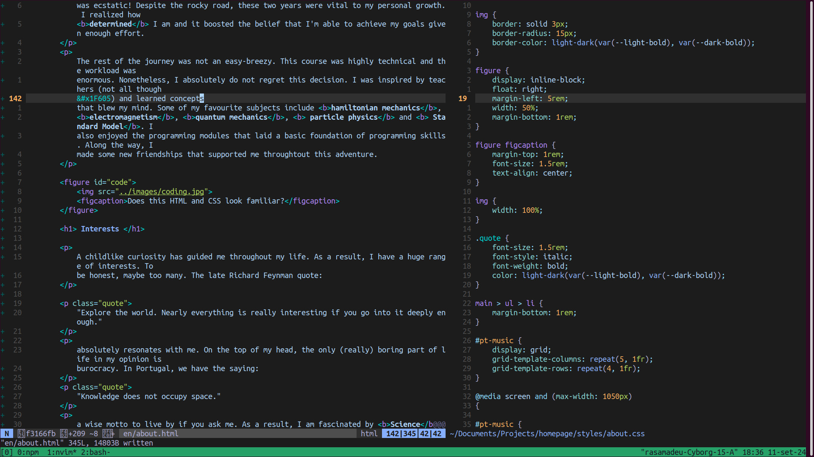
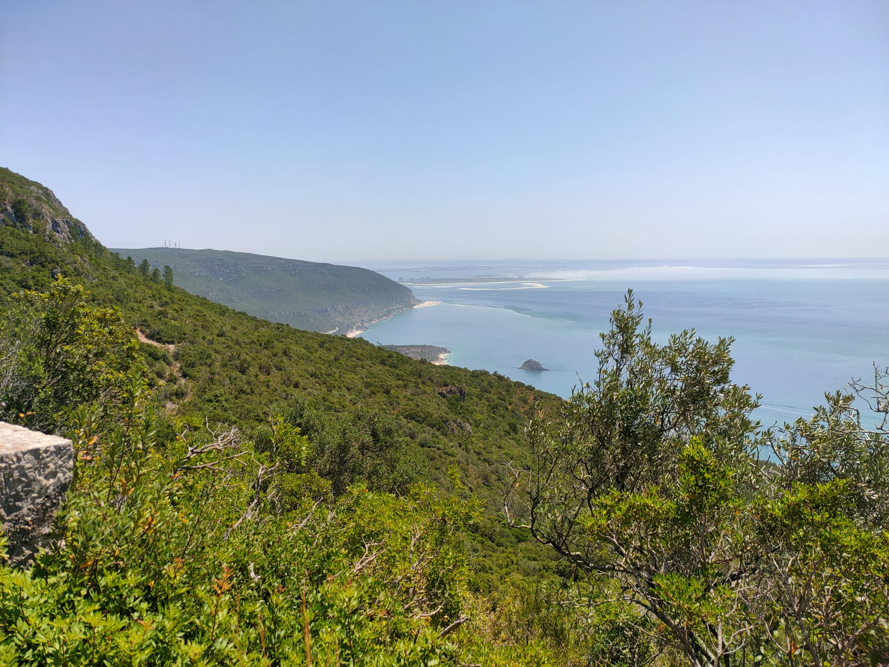
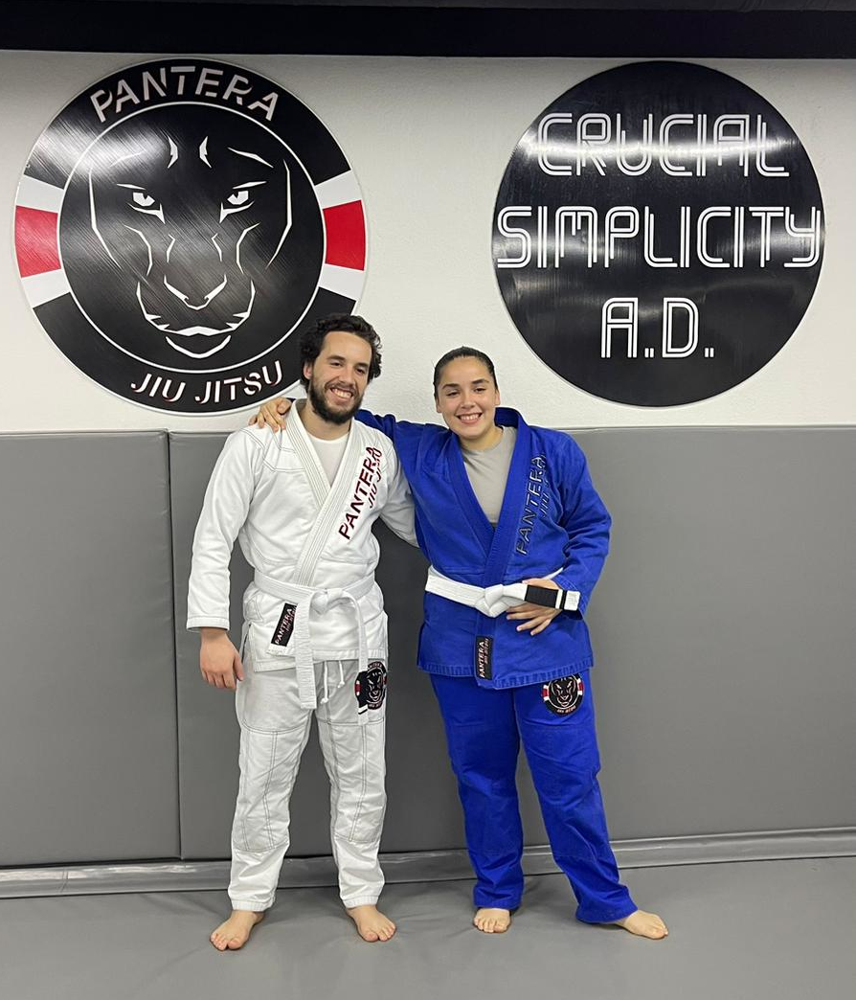

This journey begins in 2015, when I enrolled in Mechanical Engineering at Técnico Lisbon. I was
extremely
excited to embark on this new challenge and meet new people. However, during the following year I heard
about another course
at Técnico, Engineering Physics. This course focused on Physics, which was my favourite
subject growing up, and its curriculum was really interesting. Hence, I decided to change courses.
At the end of the school year, I applied to Engineering Physics and was unfortunately rejected.
Nonetheless,
I was
commited to my plan, and in the next year I enrolled in some modules from this course as an
extracurricular activity and reapplied once again at the end of year. This time around I was accepted
and
was ecstatic! Despite the rocky road, these two years were vital to my personal growth. I realized how
determined I am and it boosted the belief that I'm able to achieve my goals given enough effort.
The rest of the journey was not an easy-breezy. This course was highly technical and the workload was
enormous. Nonetheless, I absolutely do not regret this decision. I was inspired by teachers (not all
though
😅) and learned concepts
that blew my mind. Some of my favourite subjects include hamiltonian mechanics,
electromagnetism, quantum mechanics, particle physics and Standard Model.
I
also enjoyed the programming modules that laid a basic foundation of programming skills. Along the way,
I
made some new friendships that supported me throughtout this adventure.
Interests
A childlike curiosity has guided me throughout my life. As a result, I have a huge range of interests.
To
be honest, maybe too many. The late Richard Feynman quote:
"Explore the world. Nearly everything is really interesting if you go into it deeply enough."
absolutely resonates with me. On the top of my head, the only (really) boring part of life in my opinion
is
burocracy. In Portugal, we have the saying:
"Knowledge does not occupy space."
a wise motto to live by if you ask me. As a result, I am fascinated by Science, Nature,
Art, Sports... you name it.

Does this HTML and CSS look familiar?
Science
Whenever I discover
a new subject I know nothing about, there is an urge to learn and dive deep into it. Unfortunately,
there is
not enough time to do this with every matter, so one has to make concessions. Personally, problem
solving and
critical thinking stimulate me the most. This is the reason why Physics and
Mathematics
were my favourite subjects growing up. Furthermore, I recently started exploring programming and
Computer Science, as these are extremely engaging and feel like a challenging game.

Somewhere along the Alto do Formosinho trail
Nature
I grew up in Vila Nova da Barquinha, a small city located near river Tejo. Near it, there is
Constância, an adorable small village where the river Zêzere meets river Tejo, which has a
special
place in my
heart. I strongly encourage you to visit it. In my teenage years I used to work there in the summer as a
kayaking guide. I would go down the river with a group of tourists, enjoying the peaceful and
breathtaking
company of its margins. These are some of my happiest memories.
I was fortunate to grow up in a country with such beautiful beaches. Ever since I was a kid, during
summer
vacations I would go to the beach with my family, and I spent the entire time in the sea, with my
snorkeling
glasses exploring the underwater scenery and searching for fishes.
Recently, I developed a love for hiking. Walking through trails listening to the sounds of the
forest, appreciating landscapes during breaks and breathing fresh air fully restores my energy. I'm
lucky to
live near the Arrábida's Natural Park, that has some physically demanding but breathtaking
trails.
My
favourite trail is the Alto do Formosinho trail: but beware, it is not for the faint of heart!
Art
I consider myself a melophile. In my teen years I learned the guitar, both classical and electric, and
my
musical interest broadened as a result. At the time, I discovered Led Zeppelin and it was love
at
first sound. To this day it remains one of my favourite bands. I wondered what other gems were out
there,
and I started exploring more and more, and listened to many different musical genres. Here are some
personal
suggestions:
Blues - B.B. King, Albert King
Heavy metal - Iron Maiden, Metallica, Slipknot, SOAD
Rock- Nirvana, Foo Fighters, Jeff Buckley, The Doors, The Beatles, Queen, Dire Straits,
Soundgarden
Progressive- Dream Theater (Metal), Steven Wilson (Rock), Pink Floyd (Rock)
There are a lot of other genres I listen to (Reagge, Afrobeat, Rap, Jazz, Funk, Bossa Nova, ...), but
the
list was getting long enough 🙃. Below I have listed some portuguese speaking musicians you
may
not
heard
about but should definitely check in my opinion:
Slow J
Allen Halloween
Branko
Rita Vian
Pongo
Marisa
Amália
Rui Veloso
Zeca Afonso
Xutos e Pontapés
António Jobim
Dino d'Santiago
José Mario Branco
Mayra Andrade
Cesária Évora
Bonga
Here, you can check my Spotify's liked songs! It is where i store songs I found interesting and that I
would
not recall from the top of my head.

Me and my sister after a BJJ graduation
Sports
As the majority of portuguese kids, I grew up kicking around a football every school break I had.
Besides
this, I had swimming training for nearly a decade, so exercising became a vital part of my life.
In
the
first years of university, having moved to Lisbon from a slow pace city, it was hard to manage time to
practice
sports, but I would ocasionally play futsal with some acquaintances. More recently, I started practising
Brazilian Jiu-Jitsu (BJJ) at Pantera Jiu-Jitsu Pinhal Novo. The comradery among
athletes
immediately
captivated
me, and it has been an invaluable adition to my life, promoting a better health, both physically and
mentally. It is an amazing stress relief! I have even been toying with the idea of competing!
Next steps
I am freshly out of university, and I'm currently searching for a job, either in Portugal or
abroad, in
software development. Ideally, I
would like to work in a project related to Physics. But as I previously said, I'm extremely curious and
interested in exploring new areas of knowledge.
In the meantime, I am continously exploring the world of software development, learning about new
technologies, languages and concepts. Heck, I'll probably do some other projects after finishing this
webpage! Regarding hobbies, I
will continue hiking the Arrábida Natural Park, and I'm planning to return to the local gym to
physically
prepare
myself for my first BJJ competition!
If you wish to contact me, you can send an email to the address in the 'Contacts' page. I hope you enjoyed
this conversation, and once again, have a nice day! 😊